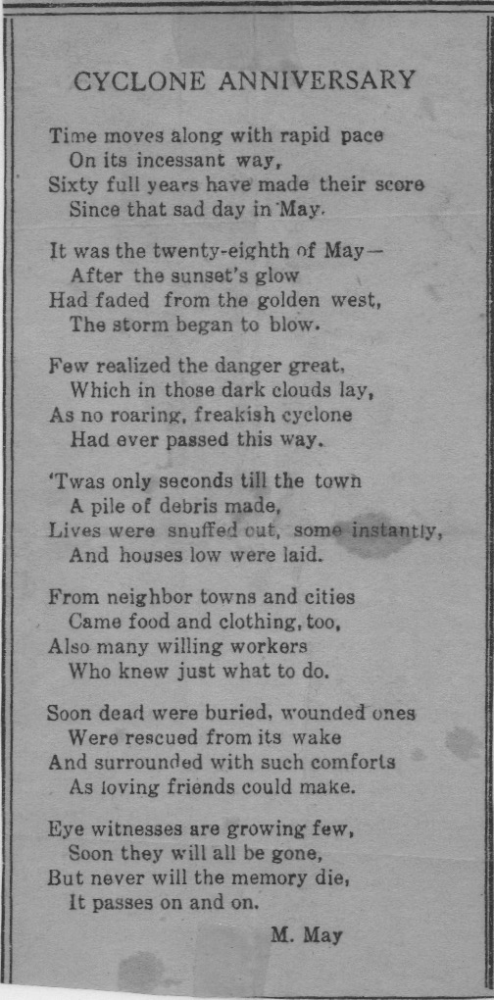

Fifty years is a long time. It is long enough that the youngest survivors of the 1880 cyclone were now old. Long enough that many of the people who had rebuilt the town — who had cleared the debris, set the new storefronts on Hayes Street, repaired the seminary, reconstructed the church records from memory — were dead. Long enough that the cyclone had passed from living experience into local history.
In 1930, on the exact anniversary, a woman identified in the archive as M. May published a poem in the local paper. The poem does not have a title recorded in the archive. It begins with a couplet that has all the formal clarity of someone who knew exactly what they were doing: the date fixed, the event named, the consequence stated.
'Twas in the year of 1880 on the 28th of May,
that a tornado hit Savoy and blowed it all away.

The M. May in the archive is almost certainly Martha Buford May, who ran the Savoy Star for many years and was one of the town's de facto historians. If she was writing in 1930, she was writing from proximity — she had known the survivors, edited the paper that kept the memory alive, and understood better than most what the cyclone meant to Savoy.
The poem goes on to name the dead, to describe the aftermath, to record the way the town looked in the days after. It is not great poetry by metropolitan standards. It is something better: necessary poetry, the kind that communities write to hold their history in a form that can be passed down orally, recited at anniversary dinners, remembered even when the newspaper clipping has gone yellow and illegible.
'Twas in the year of 1880 on the 28th of May,
that a tornado hit Savoy and blowed it all away. — M. May, published in the Savoy Star, 1930
There is a reason the archive preserved this poem alongside the photographs of the wreckage and the lists of the dead. A photograph of ruins tells you what happened. A list of victims tells you who was lost. A poem tells you how the survivors felt about it, and how they wanted to feel about it, and what they needed to remember. The poem is part of the event — not a description of it, but a response to it, in the form that responses take when they need to last.
The 1930 anniversary was fifty years on. The 1937 retrospective was fifty-seven years on. The 1993 retrospective was a hundred and thirteen years on. The poem is still in the archive. The cyclone is still the cyclone — the single event that more than any other defines what Savoy has survived, and what it means that it survived.
All Tales